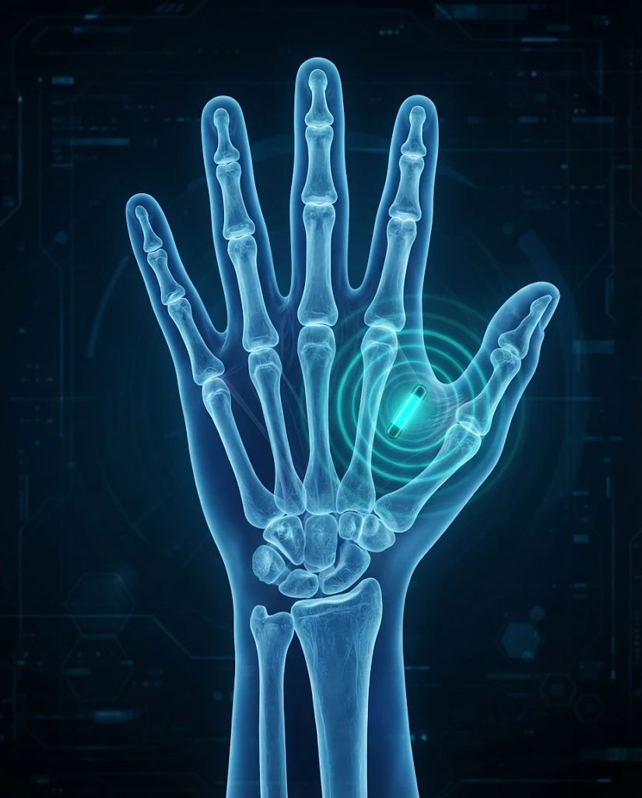
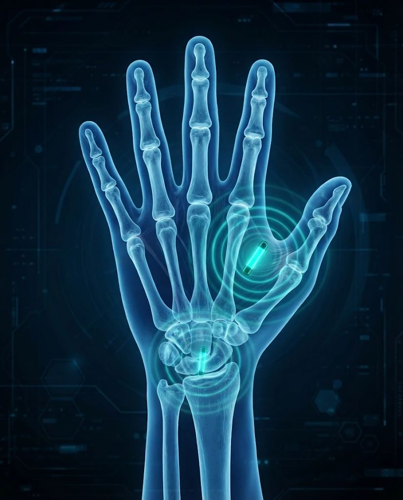
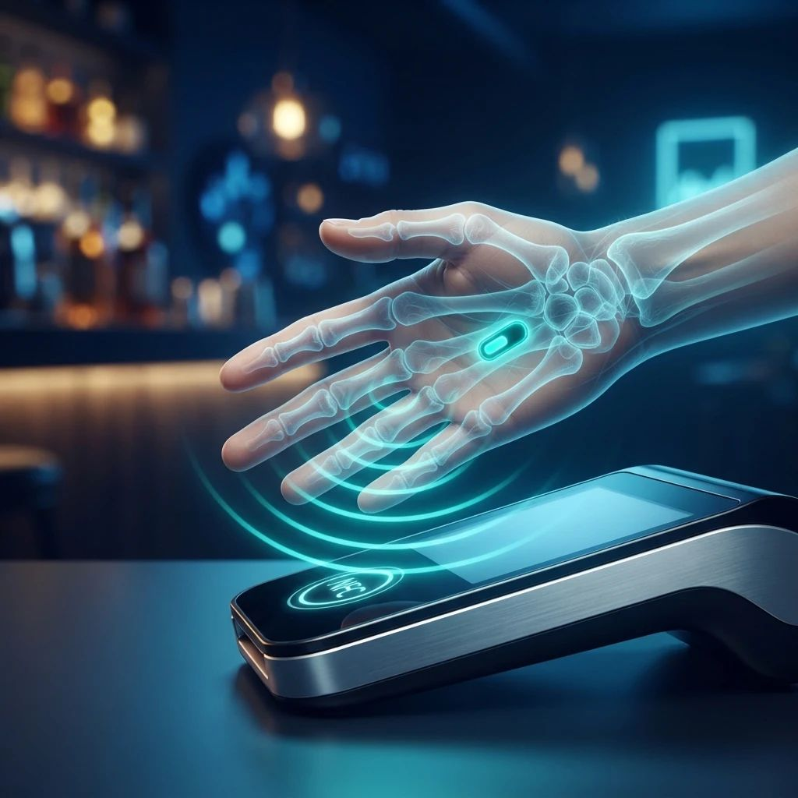
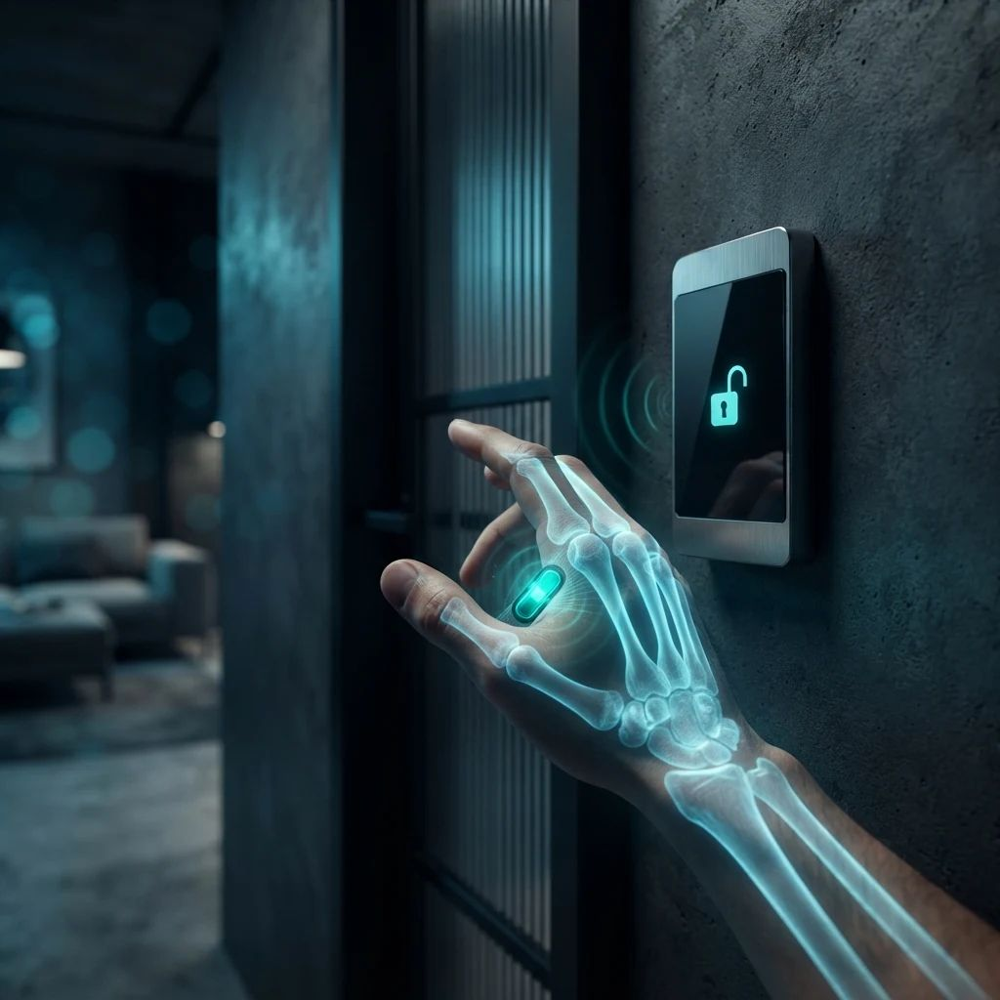
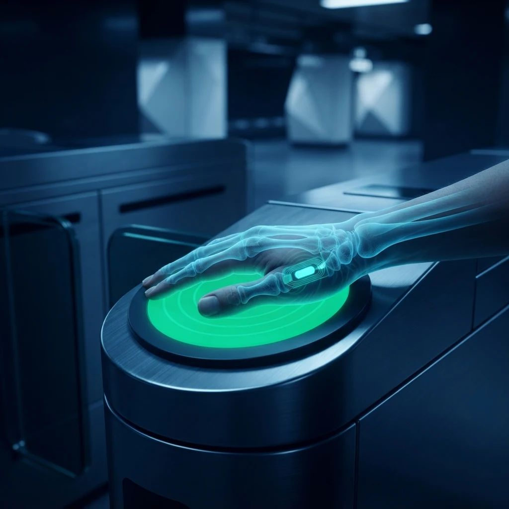
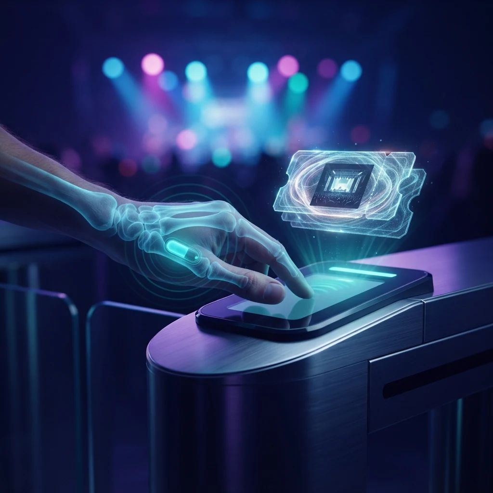
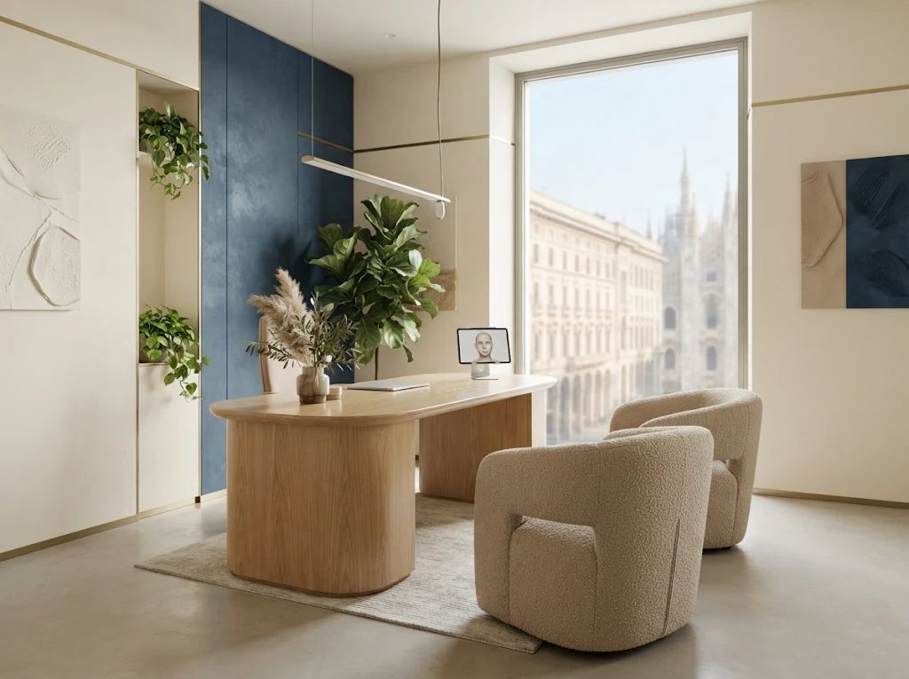

Contactless, ma senza oggetti
Lo stesso gesto del pagamento col telefono, con il chip al posto dello smartphone.
Walletmor è il chip NFC sottocutaneo per pagare in contactless in qualsiasi momento, ovunque. Lo impianta il Dott. Massimo Soresina a Milano e Brescia.


Un punto comodo da avvicinare al lettore.
Una posizione alternativa, più discreta.
Avvicini la mano al POS contactless e il pagamento è fatto. Niente carta, niente telefono, niente da dimenticare a casa.
Disponibile con WalletmorCasa, ufficio, palestra, coworking: un lettore NFC riconosce il chip e sblocca.
Scenario NFC · da confermareIl tornello legge il chip come una carta contactless e ti fa passare.
Scenario NFC · da confermareIl tuo ingresso è già con te: un tocco al varco al posto del QR code da cercare nel telefono.
Scenario NFC · da confermareAvvicini il telefono di chi hai davanti e gli compare il tuo profilo, link e contatti.
Scenario NFC · da confermare



Lo stesso gesto del pagamento col telefono, con il chip al posto dello smartphone.
Il chip è passivo: si attiva solo vicino a un lettore, senza ricariche.
NFC PASSIVO
Per chi ama la tecnologia e vuole provarla in prima persona.
Capsula ermeticamente sigillata, in materiali biocompatibili di altissima qualità.
Funziona su qualsiasi terminale contactless, in qualsiasi momento.
SU TERMINALI CONTACTLESSDopo lo smartwatch, il passo successivo: niente da indossare, niente da caricare.
L'impianto lo esegue un chirurgo plastico iscritto all'Albo di Milano dal 2004, il primo in Italia autorizzato all'impianto Walletmor.
ALBO MILANO N. 39053
Il Dott. Massimo Soresina riceve a Milano e a Brescia. L'attività chirurgica si svolge alla Casa di Cura La Madonnina di Milano.
Prima di decidere ti spiega come funziona l'impianto e risponde alle tue domande.
Scrivi su WhatsApp o chiama: lo studio ti spiega come funziona e risponde alle tue domande.